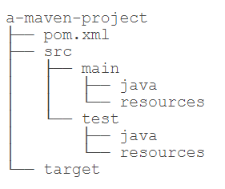

Maven基础
Maven是一个Java项目管理和构建工具，它可以定义项目结构、项目依赖，并使用统一的方式进行自动化构建，是Java项目不可缺少的工具。
Maven介绍
在了解Maven之前，我们先来看看一个Java项目需要的东西。
- 首先，我们需要确定引入哪些依赖包。例如，如果我们需要用到commons logging，我们就必须把commons logging的jar包放入classpath。如果我们还需要log4j，就需要把log4j相关的jar包都放到classpath中。这些就是依赖包的管理。
- 其次，我们要确定项目的目录结构。例如，
src目录存放Java源码，resources目录存放配置文件，bin目录存放编译生成的.class文件。 - 此外，我们还需要配置环境，例如JDK的版本，编译打包的流程，当前代码的版本号。
- 最后，除了使用Eclipse这样的IDE进行编译外，我们还必须能通过命令行工具进行编译，才能够让项目在一个独立的服务器上编译、测试、部署。
这些工作难度不大，但是非常琐碎且耗时。如果每一个项目都自己搞一套配置，肯定会一团糟。我们需要的是一个标准化的Java项目管理和构建工具。
Maven就是是专门为Java项目打造的管理和构建工具，它的主要功能有：
- 提供了一套标准化的项目结构；
- 提供了一套标准化的构建流程（编译，测试，打包，发布……）；
- 提供了一套依赖管理机制。
Maven项目结构
一个使用Maven管理的普通的Java项目，它的目录结构默认如下：

项目的根目录a-maven-project是项目名，它有一个项目描述文件pom.xml，存放Java源码的目录是src/main/java，存放资源文件的目录是src/main/resources，存放测试源码的目录是src/test/java，存放测试资源的目录是src/test/resources，最后，所有编译、打包生成的文件都放在target目录里。这些就是一个Maven项目的标准目录结构。
所有的目录结构都是约定好的标准结构，我们千万不要随意修改目录结构。使用标准结构不需要做任何配置，Maven就可以正常使用。
我们再来看最关键的一个项目描述文件pom.xml，它的内容长得像下面：
1 | <project ...> |
其中，groupId类似于Java的包名，通常是公司或组织名称，artifactId类似于Java的类名，通常是项目名称，再加上version，一个Maven工程就是由groupId，artifactId和version作为唯一标识。我们在引用其他第三方库的时候，也是通过这3个变量确定。例如，依赖commons-logging：
1 | <dependency> |
使用<dependency>声明一个依赖后，Maven就会自动下载这个依赖包并把它放到classpath中。
安装Maven
要安装Maven，可以从Maven官网下载最新的Maven 3.6.x，然后在本地解压，设置几个环境变量：
M2_HOME=/path/to/maven-3.6.x
PATH=$PATH:$M2_HOME/bin
Windows可以把%M2_HOME%\bin添加到系统Path变量中。
然后，打开命令行窗口，输入mvn -version，应该看到Maven的版本信息：
1 | ┌────────────────────────────────────────────────────────┐ |
如果提示命令未找到，说明系统PATH路径有误，需要修复后再运行。
windows下使用scoop工具安装更方便：scoop install maver